ISTRAM®/ISPOL®, yatay güzergahtaki eksenlerin analizine ve düzenlenmesine yönelik çok sayıda araca sahiptir.
ARAÇLAR menüsü altındaki araçlar
[ARAÇLAR] alt menüsünde gruplandırılmış olarak, yatay güzergah eksen tanım verilerini işlemeye, dönüştürmeye, analiz etmeye ve oluşturmaya olanak tanıyan bir dizi araç sunulmaktadır.
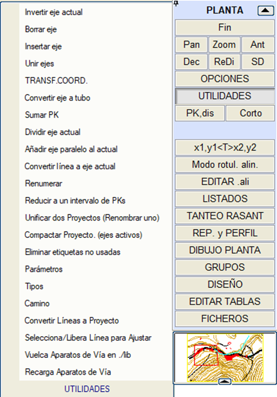
Mevcut ekseni ters çevir
|
Bir eksenin gidiş yönünü, güzergah elemanlarının sırasını ve yönünü değiştirerek tersine çevirmeyi sağlar. Daha sonra, ters çevrilen eksene bağımlı elemanları olan başka eksenler olup olmadığı gözlemlenmelidir, çünkü bazı çözümler değişebilir.
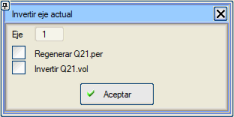Mevcut ekseni ters çevirirken şunları yapma imkanımız vardır:
- Ters çevrilmiş eksen için enkesitleri yeniden oluştur
- .vol dosyasının verilerini ters çevir:
Ters çevirme, KM'leri yeniden sıralamayı ve sağ tarafı sol tarafla değiştirmeyi içerir. Şunlar ters çevrilir:
- Kırmızı Kotlar, Diğer Eksenler ve Diğer Çizgiler, Geçiş Noktaları, Bacalar ve Borular.
- Hat ve Travers Kesimleri.
- Orta Refüj ve Dışmerkezlik
- Üstyapı Katman Paketleri.
- Hendekler, Yarma, Dolgu ve Vektörlerin ayrı hesaplama kesimleri.
- Tip kesitler (Sağ ve sol taraflar değiştirilir).
- Enkesit için semboller tablosu.
- Genişletme ve İyileştirme.
- Enkesitleri enterpole etmek için eşit aralıklar.
- Demiryollarında Platform Kullanımı.
- Deverler için hız kesimleri.
- Boykesit için metin tabloları
- Kırmızı kot ve boykesit için nokta tabloları.
- Jeoteknik malzemeleri ayrıştır.
- Duvar+Döşeme'deki döşeme yükseklikleri.
- Türetilmiş dever tabloları.
|
Eksen Sil /
Eksen Ekle
|
Projenin bir veya bir dizi eksenini silmeyi veya eklemeyi sağlar, şu hususlar dikkate alınarak:
- Yatay güzergahtaki eksenler ve bağlayıcıların diğer eksenlere referansları yeniden numaralandırılır. Yeni bir .cej dosyası oluşturulur.
- Eksen numaralarını .vol dosyalarıyla (boykesit verileri için) yeniden ilişkilendirmek gerektiğinden, uygulama, başlangıçta mevcut adın ilk dört harfi artı _b sonekinden oluşan 6 karakterlik bir temel ad ister.
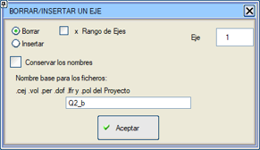
Silme veya ekleme işlemi bittiğinde, sistem, arazi dosyaları, kavşakların genişletmeleri, hemzemin kavşak dosyaları ve işlem sırasında hesaplanmışsa diğer elemanlar dahil olmak üzere, eksenler arasındaki tüm referansları yeniden numaralandırarak ve ayarlayarak yeni bir proje oluşturmuştur.
Bu seçenek, varsa hemzemin kavşakların CRZ klasöründeki eksenleri de dikkate alır.
|
Eksenleri birleştir
|
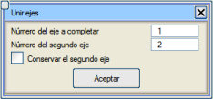Bu seçenek, iki ekseni birleştirmeyi sağlar. Tamamlanacak eksen herhangi biri olabilir ve kullanıcının belirttiği eksenin güzergah elemanları ona eklenecektir. Daha sonra, İkinci ekseni koru seçeneği etkinleştirilmedikçe bu ikinci eksen silinir.
Eğer birleştirilecek eksenler farklı dosyalardaysa, önceden YATAY GÜZERGAH dikey menüsündeki [DOSYALAR] → .cej Ekle seçeneği kullanılmalıdır.
|
Koordinat dönüşümü
|
Bu seçenek, bir öteleme (bir referans noktası) veya öteleme ve döndürme (2 referans noktası) tanımlamayı sağlayan bir veri menüsü açar.
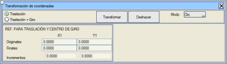
[Dönüştür]'e basıldığında mevcut veriler IS#tc.cej dosyasına kaydedilir ve dönüşüm gerçekleştirilir. [Geri Al] seçeneği, önceki dosyadan verileri geri yüklemeyi sağlar.
Dönüşüm, güzergah elemanlarında tanımlanan tüm sıfır olmayan koordinatları ve elemanlarda tanımlanan sıfır olmayan azimutları etkiler.
Orijinal ve nihai referans koordinatları hem grafiksel olarak hem de klavye ile girilebilir (mod Tıkla/Klavye).
|
Ekseni boruya dönüştür
|
Yatay güzergahtaki eksenleri BORU HATLARI projelerinin Boru moduna dönüştürme aracı.
|
KM Ekle
|
Bu iletişim kutusu, bir eksenin başlangıç KM'sini şu verilerden birini belirterek değiştirmeyi sağlar:
- Bir KM artışı.
- Yeni başlangıç KM'si.
- Bir noktanın izdüşümüne karşılık gelmesi gereken KM.
KM değişikliği şunlara uygulanabilir:
- Sadece yatay güzergahtaki eksen verilerine (.cej). Ayrıca şunlar da değiştirilecektir:
- Yatay güzergaha ve eksenin boykesit verilerine (.vol).
- Yatay güzergaha, boykesite ve eksenin arazi enkesitlerine (.per).
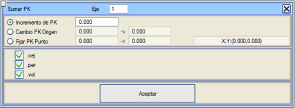
|
Mevcut ekseni böl
|
Mevcut ekseni iki eksene böler. 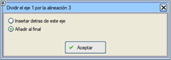Yeni eksen, mevcut güzergah elemanında başlar ve sonraki eksenler yeniden numaralandırılır. Yeni ekseni mevcut eksenin arkasına eklemek veya yeni ekseni sona eklemek arasında seçim yapılabilir, böylece eksenler yeniden numaralandırılmaz.
|
Mevcut eksene paralel eksen ekle
|
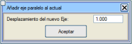Bu seçenek, mevcut eksene paralel bir eksen oluşturur. Bunun için doğru ve dairesel elemanlara bir öteleme, dairesel elemanlara bir yarıçap değişikliği ekler ve serbest elemanların istenen mesafede kalması için klotoidlerin parametrelerini yeniden hesaplar.
Dairesel ve doğru elemanlar istenen mesafede kalır, ancak klotoidler kalmaz, çünkü bir klotoide paralel olan başka bir klotoid değildir).
Bu araç, boru hattı eksenleri olarak tanımlanan eksenler için etkinleştirilmiştir.
|
Çizgiyi mevcut eksene dönüştür
|
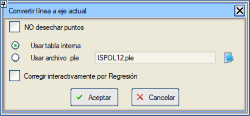Bir EDM çizgisini mevcut eksene dönüştürmeyi sağlar. Bu aracın başarılı olması için, çizginin çizilmiş bir eksenden veya sahada belirli bir hassasiyetle alınmış verilerden gelmesi gerekir. Program, güzergah elemanlarını tanımaya ve onlarla mantıklı bir eksen oluşturmaya çalışır, yarıçapları ve klotoidleri uygun şekilde tespit eder.
Eğer çizgi bir daire tanımlıyorsa, eksen merkez, yarıçap, uzunluk ve başlangıç noktasının azimutu ile bir dönel kavşak olarak oluşturulur (merkez ve yarıçap ile sabit).
Dahili bir tablo veya kullanıcı tarafından değiştirilebilen parametreler tablosu içeren bir .ple dosyası kullanabiliriz.
Eğer [ ] Noktaları atma seçeneğini etkinleştirirsek, programı aralarındaki izin verilen minimum mesafenin altındaki noktaları atmamaya zorlarız.
|
Yeniden numaralandır
|
Yatay güzergahtaki eksenleri yeniden numaralandırmayı sağlar.
Bu seçenek, projenin tüm eksenlerini yeniden numaralandırmayı da sağlar, yani sadece yatay güzergahta değil, aynı zamanda enkesit, arazi enkesitleri, sınır çizgileri, menfezler,... ile ilişkili dosyalar için de değişiklikleri dikkate alır.
Bu durumda yeni dosyalar için bir temel ad istenir:
(.cej, .vol, .per, .dof, .lfr ve .pol) bu ad her farklı dosya için farklı olabilir. Ayrıca, projede bildirilmiş olan otomatik hemzemin kavşaklar ve dönel kavşaklı bağlantılara karşılık gelen CRZ klasöründeki tüm dosyalar da yeniden numaralandırılır.
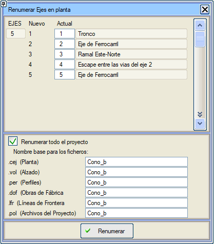
|
Bir KM aralığına indirge
|
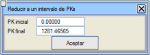Ekseni belirtilen KM'lere göre kesmeyi sağlar, böylece elde edilen nihai eksen orijinaliyle aynı olur ancak sadece belirtilen KM aralığına indirgenmiş olur.
|
İki Projeyi Birleştir (Birini Yeniden Adlandır)
|
Ortak bir ekseni olan (veya olması gerekmeyen) iki projeyi birleştirmeyi sağlar.
İki birleştirme modu vardır: Tamamlayıcı projeler ve Aynı proje. Mod, ikinci projeyi yüklemeden önce seçilmelidir.
Tüm dosyaları yeni bir temel adla yeniden adlandırmaya veya .pol, .cej, .per, .vol, .dof, .lfr ve .oli dosyaları için farklı bir temel ad kullanmaya olanak tanır. Eğer başlangıçtaki projelerin aynı ada sahip bir dosyası varsa (örn. PERF37.per), bunları çalışma klasöründe karıştırmadan önce, bu aynı seçeneği kullanarak ancak sadece ilk projeyi seçerek ve farklı bir temel ad vererek yeniden adlandırmak uygundur.
İletişim kutusunda ilk projenin eksenleri de gösterilir.
Tamamlayıcı projeler birleştirme modu:
Her bir eksen için üç eylem seçeneği sunar: Yeni projeye dahil et, sil veya iki projenin ortak bir ekseni olduğunu ve sadece birini dahil etmenin yeterli olduğunu düşün. Her birinde seçilen seçenekler arasında veya birleştirilmeyen dosyalar arasında (örneğin her ikisinin de farklı bir harita dosyası tanımlamış olması durumunda) bir uyuşmazlık olması durumunda hangi projenin tercih edildiğini seçmek mümkündür.
Aynı proje birleştirme modu:
Her iki projedeki eksenlerin aynı numaralandırmaya sahip olduğu, ancak projelerden birinde boş eksenler olabileceği (yatay güzergah elemanları tanımlanmamış) veya iki projeden birinin sonunda daha fazla eksen olabileceği durumlar için kullanılır. Bu modda eksenler yeniden numaralandırılmaz.
Varsayılan olarak, bir projede boş bir eksen varsa ve diğerinde yoksa, boş olmayan projedeki dahil edilir.
Eğer eksen her iki projede de varsa, varsayılan olarak tercihli olarak işaretlenmiş projedeki dahil edilir.
Her durumda, her eksenin hangi projeden dahil edileceğini değiştirmek mümkündür.
.vol ve .per adlarını koru seçeneği bu dosyaları yeniden adlandırmaz, nihai projede değiştirilebilecek diğer dosyalara (örn: sınır çizgileri) uygulanmaz.
Orijinal Referanslar sütunları, bağlayıcıların olduğu eksenlerin numaralarını belirtir. Nihai Referanslar sütunları, bu referansların nihai numaralarını gösterir.
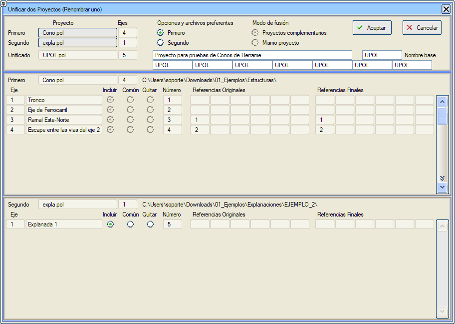
Eğer orijinal projelerin çizgisel obje (.oli), sınır çizgileri (.lfr) veya menfez (.dof) dosyaları varsa, bu dosyalar nihai proje için birleştirilir.
|
Projeyi Sıkıştır. (aktif eksenler)
|
Pasif gruplardaki eksenleri silerek yeni bir proje oluşturmayı sağlar.
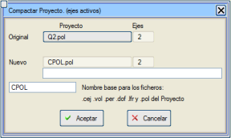
|
Kullanılmayan etiketleri sil
|
Güzergah elemanlarında tanımlanmış ancak kullanılmayan etiketleri siler.
|
Parametreler
|
Yatay güzergah tasarımının bazı parametrelerini düzenler (hata mesajlarında bekleme süresi ve hızlı boykesit için veri arası mesafe).
|
Tipler
|
Kullanılabilecek güzergah elemanı tiplerinin küçük bir listesini gösterir.
|
| Yol | Yüzey Modelleme'nin Yol aracına erişim sağlar. | | Çizgileri Projeye Dönüştür | Bireysel veya tiplere göre bir dizi çizgi seçmeyi sağlar.
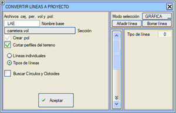
Her çizgi, [Aplikasyon/Araçlar/Çizgileri eksenlere] bölümündeki gibi bir eksene dönüştürülür. Her biri için iki kırmızı kot oluşturulur:
- Alternatif 1: Tüm köşe noktalarının kotlarıyla.
- Alternatif 2: İlk noktanın kotunu sonuncusuyla birleştirir.
Kütüphanedeki *.vol dosyalarından birinde tanımlanmış bir kesit atanır.
Bu eksenlerin tümünün arazi enkesitleri kesilebilir, yüzeyin tanımlanmış olması gerekir.
Bir *.pol projesi, *.cej dosyası, *.per ve *.vol dosyalarıyla oluşturulur.
Daireleri ve klotoidleri ara: Çizgileri, Çizgileri mevcut eksene dönüştür aracının tarzında işler. | | ./lib içine Makasları Dök | Bu araç, yerel kütüphanede, yatay güzergah eksenlerinin tanım dosyası olan *.cej'de kullanılan makasların tanım dosyaları olan *.apv dosyalarını oluşturur. |
Ayarlamak için Çizgiyi Seç/Bırak
|
Haritadan bir ekseni ayarlamak istediğimiz herhangi bir çizgiyi seçmeyi sağlar. Araç, mevcut güzergah elemanı üzerinde çalışır. Sağ fare tuşuna basıldığında iki ayar seçeneği gösterilir: İki noktayla sabit veya iki nokta ve yarıçapla dairesel.
Araç, eleman üzerine yansıtılan çizginin noktaları üzerinde P1 ve P2 noktalarının koordinatlarını ve Yarıçapı hesaplar.
Doğrular ve kurplar sabit olarak ayarlanırsa, ISTRAM konuma bağlı olarak klotoidleri hesaplar.
|
| Makasları Yeniden Yükle | Bu araç, tüm eksenlerin tüm güzergah elemanlarını gezer ve bir APV bildirilmiş olanlarda, eğer kütüphanelerde bulursa, verilerini elemana yeniden yükler. |
KM ve mesafe hesaplamaları
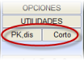KM-mesafe aracı, BOYKESİT'te de mevcuttur, ancak YATAY GÜZERGAH'tan çağrıldığında, enkesit veya kırmızı kot verileri mevcut olmadığından, bu veriler listelerde (deverler, kotlar,...) görünmez.
|